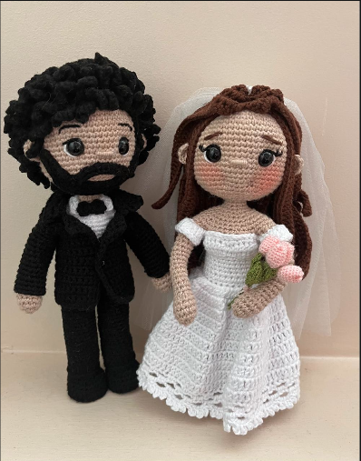
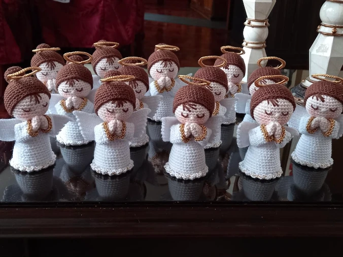
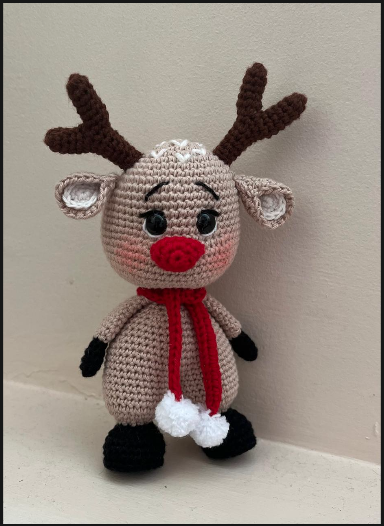
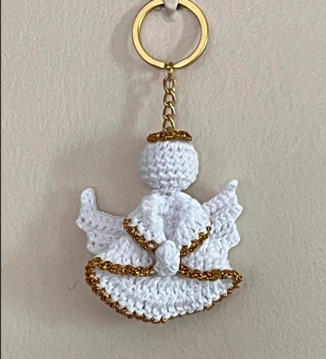
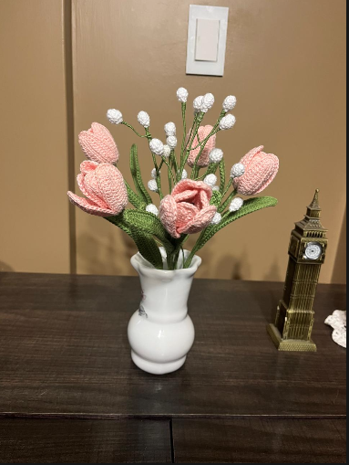

Bautizo
Angelitos con aureola dorada, en las cantidades que necesites para tus invitados.
Amigurumi hecho a mano · Cajamarca
Muñequitos, recuerdos y adornos tejidos a crochet en algodón 100%. Cada pieza nace en nuestras manos, pensada para la persona que la va a recibir.



Recuerdos para cada ocasión
Tejemos recuerdos por docena o en pieza única, con los colores, nombres y detalles de tu celebración.
Angelitos con aureola dorada, en las cantidades que necesites para tus invitados.

Llaveros de ángel en blanco y dorado: livianos, prácticos y fáciles de llevar siempre.
Los novios tejidos a su imagen: el cabello, la barba, el vestido, el ramo.

Ramos que no se marchitan. Para un aniversario, un cumpleaños o simplemente porque sí.
La colección
Temporada navideña
Cada set incluye a la Sagrada Familia y puede completarse con reyes magos, pastores, ángel y animalitos. Hazlo tuyo eligiendo el estilo y los colores.
Consultar por un nacimientoDesliza para ver los estilos →Sigue bajando para ver los estilos ↓
Cómo hacer tu pedido
Cuéntanos por WhatsApp qué celebras, cuántas piezas necesitas y para cuándo.
Elegimos modelo, colores y detalles. Si tienes una foto de referencia, mejor.
Cada pieza se teje a mano en algodón 100%, punto por punto, sin apuro.
Te avisamos cuando esté listo y acordamos la entrega en Cajamarca.
Nuestra historia
En quechua, qaytu es el hilo con el que todo empieza. Nos gustó la idea de que nuestra marca llevara ese nombre, porque eso es exactamente lo que hacemos: tomar un hilo de algodón y, con paciencia, convertirlo en algo que alguien va a guardar por años.
Tejemos desde Cajamarca, en casa, con ganchillo y mucho cuidado en cada detalle: unas mejillas sonrosadas, un borde dorado, una aureola que quede bien derechita.